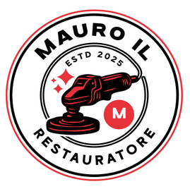

 Mauro il Restauratore
Home
Galleria
Chi Siamo
Contatti
Contattaci
Saremo felici di aiutarti
Informazioni di Contatto
Laboratorio
Via Roma 123, 10100 Torino (TO)
Telefono
+39 011 123 4567
Email
info@restauromobili.it
Orari
Lun-Ven: 9:00 - 18:00
Sab: 9:00 - 13:00
Su appuntamento
Sopralluoghi e preventivi gratuiti